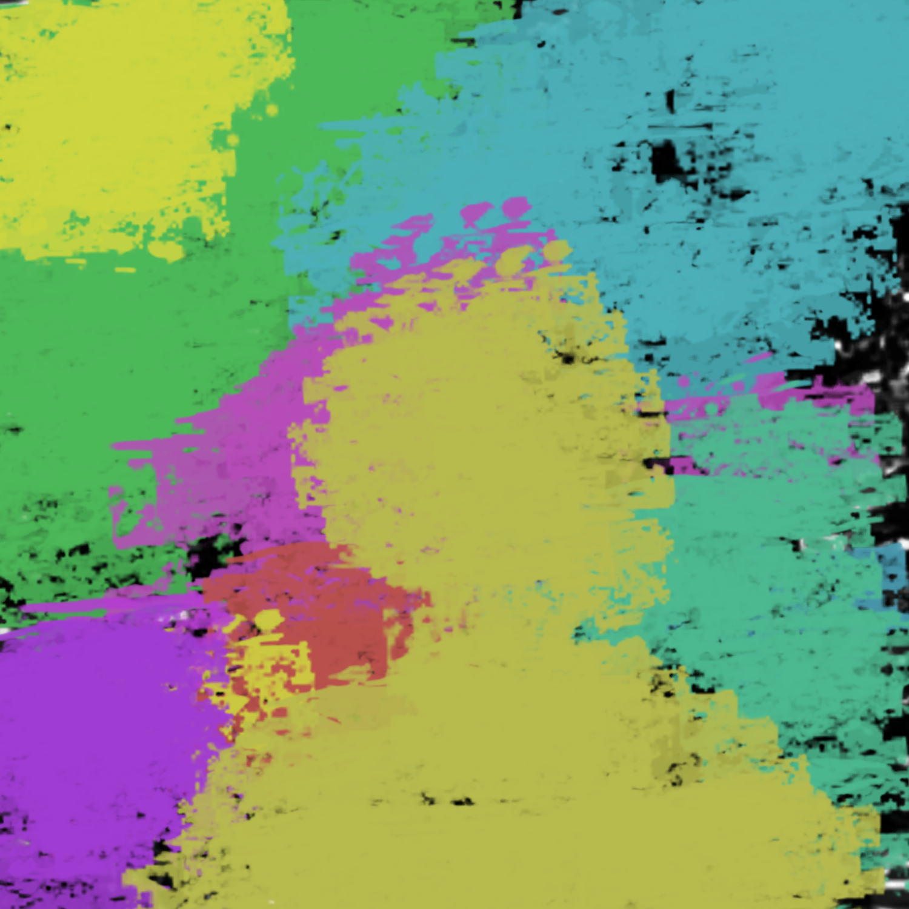

*For some reason, you can walk through walls. You walk through the walls of the Hospital, and follow the rabbit on an adventure. You travel from place to place, and time to time. You end up in the Victorian Period in Europe, to the Qing Dynasty in China,
to the Crusades in the Mediterranean, and everywhere in between. You then have an out of body experience. You see yourself transforming. You see a nude man with zombies. You see yourself in possession of supernatural qualities and objects, like
a glowing ring. You see various demons, all of different colors. You then hear a voice, saying “Calm down.” You wake up from your dream and see staff members measuring your pulse. You notice it was a dream but feel like something is amiss.*